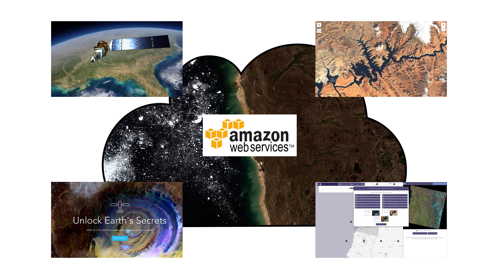

19 March 2015 a date to remember
Today has been a great day! Something just changed in the world of Landsat (and maybe globally for remote sensing). Several announcements by Mapbox "(landsat-live goes live)", Developmentseed "(Powering Landsat Power Tools)", ESRI "(Unlock Earths Secrets)" and PlanetLabs "(L8 Data is Available on AWS! How This Helps Us…)" around something called AWS made my day.
Why is this important? BECAUSE "AWS" means Amazon Web Services... and this is it!
Since the beggining of Landsat 8, data were hosted on NASA and Google Earth Engine servers and now they are also on Amazon's... BUT (and it is why it's great) each scene can now be processed ON THE CLOUD...
With this announcement it is clear enough that cloud computing even for massive amount of remote sensing data is a reality.
on-live data / new web services / new processing chains ... this open a new world of possibilities.
REVOLUTION

- Date: March 2015
- Category: Landsat 8 / OpenData / Cloud Computin